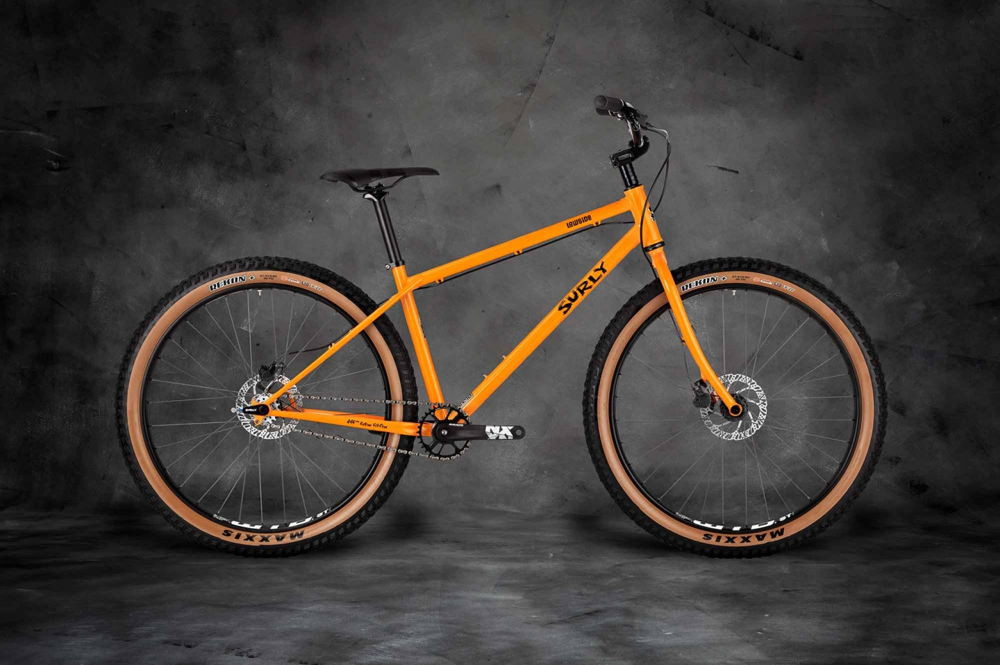

About Us
A bicycle, also called a pedal cycle, bike, push-bike or cycle, is a human-powered or motor-powered assisted, pedal-driven, single-track vehicle, having two wheels attached to a frame, one behind the other. A bicycle rider is called a cyclist, or bicyclist. Bicycles were introduced in the 19th century in Europe. By the early 21st century there were more than 1 billion.[1][2][3] These numbers far exceed the number of cars, both in total and ranked by the number of individual models produced.[4][5][6] They are the principal means of transportation in many regions. They also provide a popular form of recreation, and have been adapted for use as children's toys, general fitness, military and police applications, courier services, bicycle racing, and bicycle stunts.